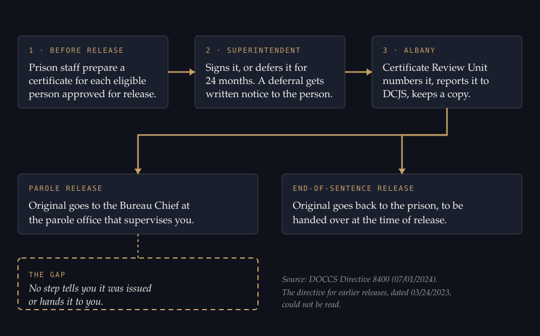
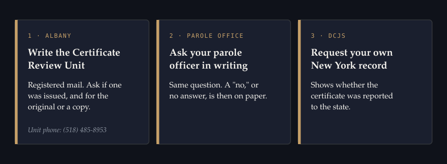

If you are released from a New York state prison on parole, ask your parole officer and the state's Certificate Review Unit whether a Certificate of Relief from Disabilities was issued for you. Not everyone gets one. Some people are ineligible, and some are deferred. But for the people who are eligible, DOCCS prepares the certificate before release, and the rule that governs it does not require anyone to tell you it exists.
One man who came home on parole in December 2023 learned this fall that DOCCS had issued him a certificate on December 12, 2023. No one had told him. The state's Certificate Review Unit told him he could just ask for it. His parole officer declined, and her supervisor did not answer his note. After he sent a registered letter to Albany, a person at the unit told him the certificate can only be sent to him after his parole is over. He didn't have it when this article was published.
Why it is worth asking
Under Correction Law § 753(2), when an employer weighs a conviction it "shall also give consideration to a certificate of relief from disabilities" (or a certificate of good conduct), and the certificate "shall create a presumption of rehabilitation in regard to the offense or offenses specified therein." So the presumption covers the offenses listed on the certificate. An employer still decides under Article 23-A whether the conviction has a direct relationship to the job or creates an unreasonable risk. The certificate puts a legal presumption on your side of that decision. It doesn't guarantee anything.
Who gets one, and who doesn't
DOCCS Directive 8400, in its current version dated July 1, 2024, tells prison staff to prepare a certificate "for each eligible incarcerated individual approved for release." Nobody has to apply. The superintendent then signs it or defers it.
A certificate of relief is for someone with no more than one felony conviction. Under Correction Law § 700, two or more felony convictions charged in separate counts of one indictment are treated as one. Someone with more than one felony conviction would look at a Certificate of Good Conduct instead.
The directive tells the superintendent to defer the certificate for 24 months if any of these apply:
- Time in a disciplinary confinement unit, for any amount of time, in the 12 months before the Parole Board interview, case review or release date.
- Good time lost in that same 12 months.
- A sentence for a felony under certain Penal Law articles (130, 135, 230, 235, 255, 263, 485 or 490), or for a sexually motivated felony.
- A finding by the superintendent that issuing it at release would be inconsistent with the public interest and the person's rehabilitation.
Anyone with an open warrant, detainer or pending charge is not processed until that is resolved. If a certificate is deferred, the directive requires written notice.
Where it goes if you are released on parole
For a granted certificate, the directive sends it to the Certificate Review Unit in Albany, which reports it to the state Division of Criminal Justice Services. The unit then "will maintain a copy on file and send the original to the Bureau Chief at the location where the incarcerated individual will be supervised." That is the parole office. The directive has no step that tells the person on parole a certificate was issued, and no step that hands it to them.
That fits the account above. The Certificate Review Unit confirmed it sent the certificate to his parole office as part of its protocol. When he asked for it, his parole officer declined, and a person at the unit told him it can only be sent to him after parole is over. We haven't found that rule in the directive, so treat it as one account. If it holds for others, someone on parole who needs the certificate now, for a job or an apartment, can't count on holding it.

People released at the end of their sentence, with no parole to follow, are handled differently. For them, the unit sends the original back to the prison "to ensure that the incarcerated individual receives the certificate at the time of release."
The directive in effect for people released before July 1, 2024 was dated March 24, 2023. We haven't been able to read it, so we can't say what it required.
How to ask, in order
- Write the Certificate Review Unit by registered mail. Ask whether a Certificate of Relief from Disabilities was issued for you, and for the original or a copy. In the account above, the unit said it can only be sent to the person after parole is over. DOCCS lists the unit at (518) 485-8953 on its certificate application. A letter leaves a paper trail that a phone call doesn't.
- Ask your parole officer in writing. If the answer is no, or there is no answer, that is on paper too.
- Request your own New York record through the DCJS record review process, to see whether the certificate was reported.

If none was issued, you can still ask for one. While you are on parole, the request goes through your parole officer. Once your sentence is complete, you apply to the Certificate Review Unit directly. Our Certificate of Relief explainer walks through each route.
A certificate issued while you are under supervision is temporary. Under § 703(4), it can be revoked for a violation of supervision conditions, but only on notice and after a chance to explain. If it isn't revoked, it becomes permanent when supervision ends.
What the rule doesn't say
The directive doesn't say what a parole officer must do when someone asks for the original. That silence is the gap. It isn't evidence that any officer broke a rule.
What we don't know yet
Every prison sends the Certificate Review Unit a monthly report (Form CS8400B) counting eligible cases, certificates issued and certificates deferred. So DOCCS has the numbers. We found no published totals.
On November 5, we asked the state's criminal records division (DCJS) under the Freedom of Information Law for the yearly count of certificates reported to it. We will ask DOCCS for its monthly counts and for any written policy on what happens to the original once it reaches a parole office. We'll publish what comes back.
- How often a certificate reaches a person on parole, and how often it stays in the office.
- What parole bureaus do with originals once they arrive.
- What the March 24, 2023 version of Directive 8400 required.
- Whether the unit will mail a copy to someone still on parole, and whether a parole officer can be required to hand one over on request.
If you came home on parole and later found out a certificate had been issued for you, or found out you never got one, tell us at caseanalytica@gmail.com. We're collecting these accounts.
The exact question to ask
Put this in writing: "Was a Certificate of Relief from Disabilities issued for me, and where is the original?" Keep a copy of the question and the answer.